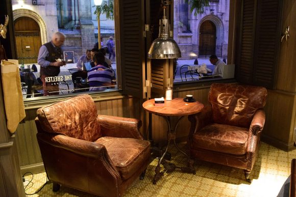

Recomendaciones de la casa
 Café filtrado en la mítica V60
Café filtrado en la mítica V60
La bebida más consumida en el mundo después del agua es el café: se toman 2 billones de tazas por día. Te contamos cuáles son las mejores cafeterías de Buenos Aires para tomar café de especialidad y qué pedir (los precios no los informamos porque lamentablemente de actualizan con bastante frecuencia).
El café no para de crecer en Argentina. En los últimos tres años, el consumo de la infusión creció un 2,2%. Un informe de Nespresso destaca que la infusión se toma mucho más en el ámbito hogareño y también se amplió el target etario: se pudo ver a más jóvenes comprando café para el hogar y animándome a probar nuevas recetas.
Pero además del consumo hogareño, hay otra tendencia ya instalada en Buenos Aires: el café de especialidad.
Lo que parecía solo una moda, desembarcó hace 10 años y se ha ido consolidando con el surgimiento de nuevas cafeterías y consumidores fanáticos interesados en probar nuevas variedades.
A continuación, los 10 cafés que no te podés perder dentro de la Ciudad de Buenos Aires.
THE COFFEE SHELTER - RETIRO
Ubicada en una zona de la ciudad con tintes parisinos, es ideal para ir con un libro y olvidarse del tiempo en uno de sus cómodos sillones. Se recomienda pedir el flat white y el croissant de almendras.
Podes tentarte con sus redes en @thesheltercoffee
